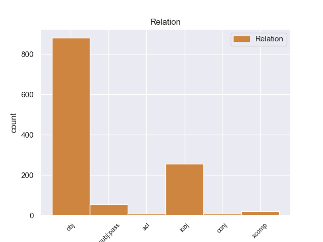
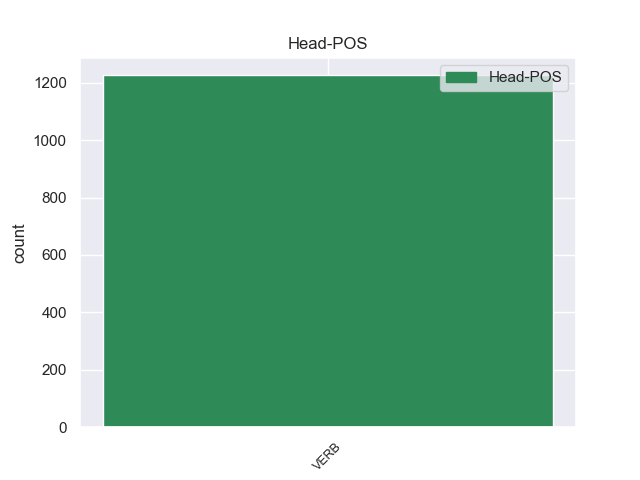
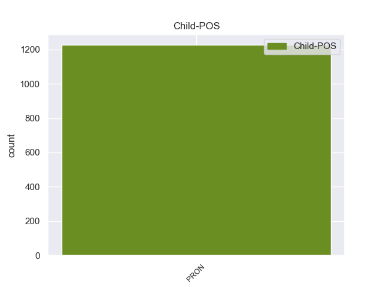

Distribution of features within this leaf



Morphosyntax Rules sorted by frequency.
- When the dependent token is the object(obj) of the head token, and the head token is VERB and the dependent token is PRON, the Case needs to be Acc,Dat.
1 इसी _ _ _ _ 0 _ _ _
2 तरह _ _ _ _ 0 _ _ _
3 इंडिया _ _ _ _ 0 _ _ _
4 शाइनिंग _ _ _ _ 0 _ _ _
5 अभियान _ _ _ _ 0 _ _ _
6 पर _ _ _ _ 0 _ _ _
7 कैग _ _ _ _ 0 _ _ _
8 ने _ _ _ _ 0 _ _ _
9 अपनी _ _ _ _ 0 _ _ _
10 रिपोर्ट _ _ _ _ 0 _ _ _
11 में _ _ _ _ 0 _ _ _
12 कहा _ _ _ _ 0 _ _ _
13 कि _ _ _ _ 0 _ _ _
14 भारतीय _ _ _ _ 0 _ _ _
15 संविधान _ _ _ _ 0 _ _ _
16 के _ _ _ _ 0 _ _ _
17 अनुसार _ _ _ _ 0 _ _ _
18 बजट _ _ _ _ 0 _ _ _
19 में _ _ _ _ 0 _ _ _
20 दिखाए _ _ _ _ 0 _ _ _
21 गए _ _ _ _ 0 _ _ _
22 खर्च _ _ _ _ 0 _ _ _
23 के _ _ _ _ 0 _ _ _
24 अतिरिक्त _ _ _ _ 0 _ _ _
25 और _ _ _ _ 0 _ _ _
26 किसी _ _ _ _ 0 _ _ _
27 प्रकार _ _ _ _ 0 _ _ _
28 का _ _ _ _ 0 _ _ _
29 खर्च _ _ _ _ 0 _ _ _
30 नहीं _ _ _ _ 0 _ _ _
31 किया _ _ _ _ 0 _ _ _
32 जाना _ _ _ _ 0 _ _ _
33 चाहिए _ _ _ _ 0 _ _ _
34 और _ _ _ _ 0 _ _ _
35 यदि _ _ _ _ 0 _ _ _
36 करना _ _ _ _ 0 _ _ _
37 अनिवार्य _ _ _ _ 0 _ _ _
38 हो _ _ _ _ 0 _ _ _
39 तो _ _ _ _ 0 _ _ _
40 अनुपूरक _ _ _ _ 0 _ _ _
41 माँग _ _ _ _ 0 _ _ _
42 के _ _ _ _ 0 _ _ _
43 रूप _ _ _ _ 0 _ _ _
44 में _ _ _ _ 0 _ _ _
45 उसे वह PRON PRP Case=Acc,Dat|Number=Sing|Person=3|PronType=Prs 53 obj _ ChunkId=NP12|ChunkType=head|Tam=ko|Translit=use|Vib=को
46 संसद _ _ _ _ 0 _ _ _
47 के _ _ _ _ 0 _ _ _
48 समक्ष _ _ _ _ 0 _ _ _
49 अनुमोदन _ _ _ _ 0 _ _ _
50 के _ _ _ _ 0 _ _ _
51 लिए _ _ _ _ 0 _ _ _
52 प्रस्तुत _ _ _ _ 0 _ _ _
53 किया कर VERB VM Aspect=Perf|Gender=Masc|VerbForm=Part|Voice=Act 0 _ _ _
54 जाना _ _ _ _ 0 _ _ _
55 चाहिए _ _ _ _ 0 _ _ _
56 । _ _ _ _ 0 _ _ _
1 उन्होंने _ _ _ _ 0 _ _ _
2 इसे यह PRON PRP Case=Acc,Dat|Number=Sing|Person=3|PronType=Prs 8 iobj _ ChunkId=NP2|ChunkType=head|Tam=ko|Translit=ise|Vib=को
3 चीनियों _ _ _ _ 0 _ _ _
4 का _ _ _ _ 0 _ _ _
5 हृदय _ _ _ _ 0 _ _ _
6 परिवर्तन _ _ _ _ 0 _ _ _
7 करार _ _ _ _ 0 _ _ _
8 दिया दे VERB VM Aspect=Perf|Gender=Masc|Number=Sing|VerbForm=Part|Voice=Act 0 _ _ _
9 । _ _ _ _ 0 _ _ _
1 इन _ _ _ _ 0 _ _ _
2 ठिकानों _ _ _ _ 0 _ _ _
3 को _ _ _ _ 0 _ _ _
4 १९९९ _ _ _ _ 0 _ _ _
5 में _ _ _ _ 0 _ _ _
6 ' _ _ _ _ 0 _ _ _
7 ऑपरेशन _ _ _ _ 0 _ _ _
8 विजय _ _ _ _ 0 _ _ _
9 ' _ _ _ _ 0 _ _ _
10 के _ _ _ _ 0 _ _ _
11 समय _ _ _ _ 0 _ _ _
12 से _ _ _ _ 0 _ _ _
13 ही _ _ _ _ 0 _ _ _
14 बनाया _ _ _ _ 0 _ _ _
15 गया _ _ _ _ 0 _ _ _
16 था _ _ _ _ 0 _ _ _
17 और _ _ _ _ 0 _ _ _
18 अब _ _ _ _ 0 _ _ _
19 उन्हें वह PRON PRP Case=Acc,Dat|Number=Plur|Person=3|PronType=Prs 24 nsubj:pass _ ChunkId=NP5|ChunkType=head|Tam=ko|Translit=unheṁ|Vib=को
20 पूर्व _ _ _ _ 0 _ _ _
21 तैनाती _ _ _ _ 0 _ _ _
22 स्थल _ _ _ _ 0 _ _ _
23 पर _ _ _ _ 0 _ _ _
24 भेजा भेज VERB VM Aspect=Perf|Gender=Masc|Number=Sing|Person=3|VerbForm=Part|Voice=Act 0 _ _ _
25 जा _ _ _ _ 0 _ _ _
26 रहा _ _ _ _ 0 _ _ _
27 है _ _ _ _ 0 _ _ _
28 । _ _ _ _ 0 _ _ _
1 नानावटी _ _ _ _ 0 _ _ _
2 आयोग _ _ _ _ 0 _ _ _
3 की _ _ _ _ 0 _ _ _
4 सिफारिशों _ _ _ _ 0 _ _ _
5 को _ _ _ _ 0 _ _ _
6 कार्रवाई _ _ _ _ 0 _ _ _
7 रिपोर्ट _ _ _ _ 0 _ _ _
8 के _ _ _ _ 0 _ _ _
9 तहत _ _ _ _ 0 _ _ _
10 केंद्रीय _ _ _ _ 0 _ _ _
11 मंत्रिपरिषद _ _ _ _ 0 _ _ _
12 ने _ _ _ _ 0 _ _ _
13 इसे यह PRON PRP Case=Acc,Dat|Number=Sing|Person=3|PronType=Prs 17 acl _ ChunkId=NP5|ChunkType=head|Tam=ko|Translit=ise|Vib=को
14 बीती _ _ _ _ 0 _ _ _
15 रात _ _ _ _ 0 _ _ _
16 मंजूर _ _ _ _ 0 _ _ _
17 कर कर VERB VM Number=Sing|Voice=Act 0 _ _ _
18 लिया _ _ _ _ 0 _ _ _
19 । _ _ _ _ 0 _ _ _
non-conforming Examples:
1 ओरछा _ _ _ _ 0 _ _ _
2 का _ _ _ _ 0 _ _ _
3 वैभव _ _ _ _ 0 _ _ _
4 पत्थरों _ _ _ _ 0 _ _ _
5 में _ _ _ _ 0 _ _ _
6 जैसे _ _ _ _ 0 _ _ _
7 कैद _ _ _ _ 0 _ _ _
8 हो _ _ _ _ 0 _ _ _
9 गया _ _ _ _ 0 _ _ _
10 है _ _ _ _ 0 _ _ _
11 , _ _ _ _ 0 _ _ _
12 समय _ _ _ _ 0 _ _ _
13 यहाँ _ _ _ _ 0 _ _ _
14 ठहरा _ _ _ _ 0 _ _ _
15 हुआ _ _ _ _ 0 _ _ _
16 लगता _ _ _ _ 0 _ _ _
17 है _ _ _ _ 0 _ _ _
18 और _ _ _ _ 0 _ _ _
19 हम हम PRON PRP Case=Nom|Number=Plur|Person=1|PronType=Prs 20 nsubj:pass _ ChunkId=NP7|ChunkType=head|Tam=0|Translit=hama|Vib=0
20 चले चल VERB VM Aspect=Perf|Gender=Masc|Number=Plur|VerbForm=Part|Voice=Act 0 _ _ _
21 जाते _ _ _ _ 0 _ _ _
22 हैं _ _ _ _ 0 _ _ _
23 बरसों _ _ _ _ 0 _ _ _
24 बरस _ _ _ _ 0 _ _ _
25 पीछे _ _ _ _ 0 _ _ _
26 , _ _ _ _ 0 _ _ _
27 मध्यकाल _ _ _ _ 0 _ _ _
28 के _ _ _ _ 0 _ _ _
29 एक _ _ _ _ 0 _ _ _
30 शहर _ _ _ _ 0 _ _ _
31 में _ _ _ _ 0 _ _ _
32 . _ _ _ _ 0 _ _ _
1 संभवतः _ _ _ _ 0 _ _ _
2 यह यह PRON PRP Case=Nom|Number=Sing|Person=3|PronType=Prs 12 obj _ ChunkId=NP|ChunkType=head|Tam=0|Translit=yaha|Vib=0
3 सुल्तान _ _ _ _ 0 _ _ _
4 गयासुद्दीन _ _ _ _ 0 _ _ _
5 खिलजी _ _ _ _ 0 _ _ _
6 ने _ _ _ _ 0 _ _ _
7 बड़े _ _ _ _ 0 _ _ _
8 हरम _ _ _ _ 0 _ _ _
9 के _ _ _ _ 0 _ _ _
10 रूप _ _ _ _ 0 _ _ _
11 में _ _ _ _ 0 _ _ _
12 बनवाया बन VERB VM Aspect=Perf|Gender=Masc|Number=Sing|VerbForm=Part|Voice=Act 0 _ _ _
13 था _ _ _ _ 0 _ _ _
14 . _ _ _ _ 0 _ _ _
1 यह यह PRON PRP Case=Nom|Number=Sing|Person=3|PronType=Prs 10 obj _ ChunkId=NP|ChunkType=head|Tam=0|Translit=yaha|Vib=0
2 दर्शकों _ _ _ _ 0 _ _ _
3 के _ _ _ _ 0 _ _ _
4 लिए _ _ _ _ 0 _ _ _
5 बैठक _ _ _ _ 0 _ _ _
6 व्यवस्था _ _ _ _ 0 _ _ _
7 के _ _ _ _ 0 _ _ _
8 रूप _ _ _ _ 0 _ _ _
9 में _ _ _ _ 0 _ _ _
10 बनाया बना VERB VM Aspect=Perf|Gender=Masc|Number=Sing|VerbForm=Part|Voice=Pass 0 _ _ _
11 गया _ _ _ _ 0 _ _ _
12 था _ _ _ _ 0 _ _ _
13 . _ _ _ _ 0 _ _ _
1 अब _ _ _ _ 0 _ _ _
2 यह यह PRON PRP Case=Nom|Number=Sing|Person=3|PronType=Prs 9 obj _ ChunkId=NP2|ChunkType=head|Tam=0|Translit=yaha|Vib=0
3 एक _ _ _ _ 0 _ _ _
4 पवित्र _ _ _ _ 0 _ _ _
5 स्थान _ _ _ _ 0 _ _ _
6 के _ _ _ _ 0 _ _ _
7 रूप _ _ _ _ 0 _ _ _
8 में _ _ _ _ 0 _ _ _
9 जाना जान VERB VM Aspect=Perf|Gender=Masc|Number=Sing|Person=3|VerbForm=Part|Voice=Pass 0 _ _ _
10 जाता _ _ _ _ 0 _ _ _
11 है _ _ _ _ 0 _ _ _
12 . _ _ _ _ 0 _ _ _
1 यह यह PRON PRP Case=Nom|Number=Sing|Person=3|PronType=Prs 12 obj _ ChunkId=NP|ChunkType=head|Tam=0|Translit=yaha|Vib=0
2 सैनिकों _ _ _ _ 0 _ _ _
3 के _ _ _ _ 0 _ _ _
4 लिए _ _ _ _ 0 _ _ _
5 पूरे _ _ _ _ 0 _ _ _
6 क्षेत्र _ _ _ _ 0 _ _ _
7 पर _ _ _ _ 0 _ _ _
8 निगाह _ _ _ _ 0 _ _ _
9 रखने _ _ _ _ 0 _ _ _
10 के _ _ _ _ 0 _ _ _
11 लिए _ _ _ _ 0 _ _ _
12 बनाया बना VERB VM Aspect=Perf|Gender=Masc|Number=Sing|VerbForm=Part|Voice=Pass 0 _ _ _
13 गया _ _ _ _ 0 _ _ _
14 था _ _ _ _ 0 _ _ _
15 । _ _ _ _ 0 _ _ _